26 Nov. 2025 - Journées Jeunes Chercheur·es du GdR MAGIS
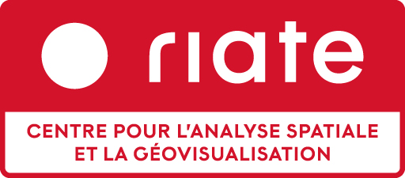
Une petite équipe :
1 directeur (PR Univ. Paris Cité)
5 ingénieur·es permanent·es (CNRS et Univ. Paris Cité)
2 ingénieurs en CDD (+ stagiaires)
Une Unité d’Appui et de Recherche (dont le nom a évolué en 2024)
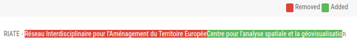
Le RIATE, une UAR avec la transmission au cœur de ses missions
Mission 1 : Développement de méthodes et d’outils en géographie quantitative
Mission 2 : Diffusion et partage des savoir-faire et des connaissances
Mission 3 : Partenariats scientifiques
Mise en œuvre des méthodes de la recherche reproductible :
Gestion de versions (Git, GitHub / GitLab, etc.)
Automatisation des analyses (scripts, notebooks, etc.)
Documentation des analyses (littératie des données, métadonnées, etc.)
Partage des données (dépôts de données et des codes, licences ouvertes, etc.)
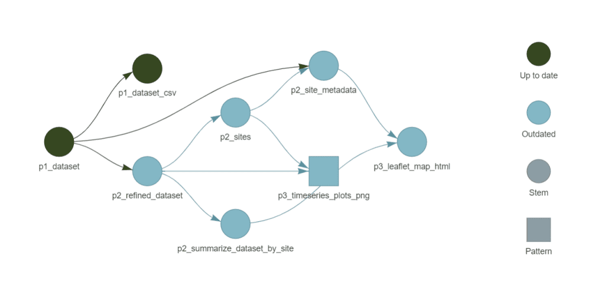
Formalisation de la chaîne de traitement reproductible avec{targets}
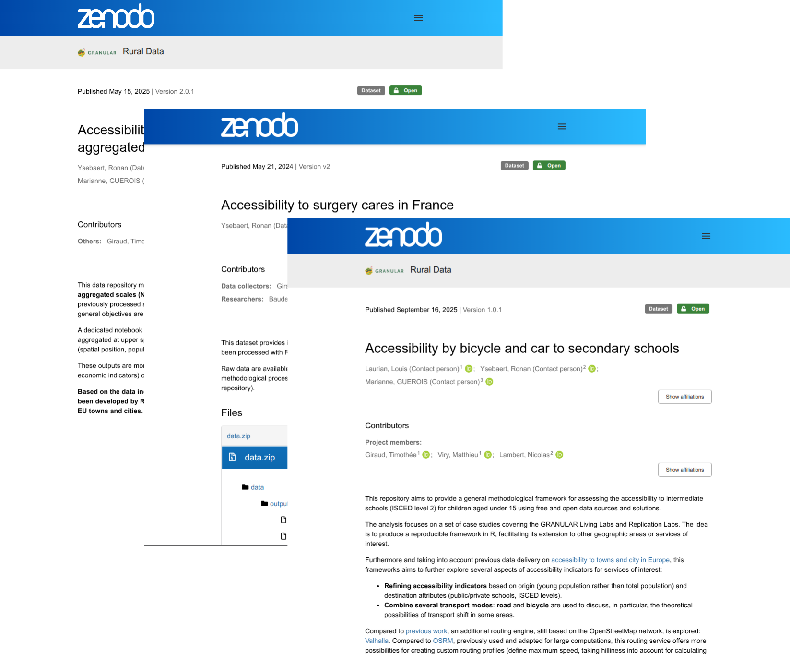
Publication de jeux de données et codes sur Zenodo
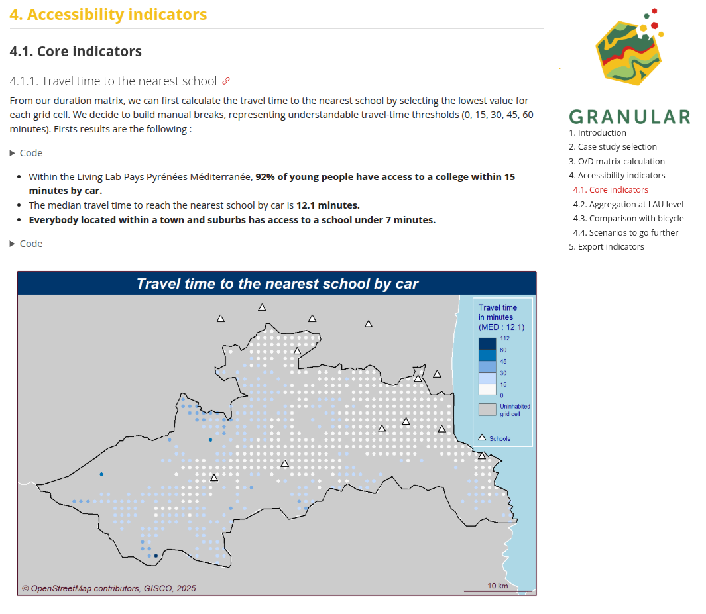
Exemple de notebook accompagnant un jeu de données
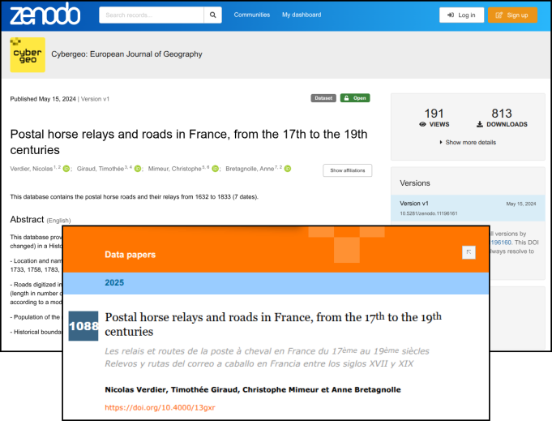
Data paper
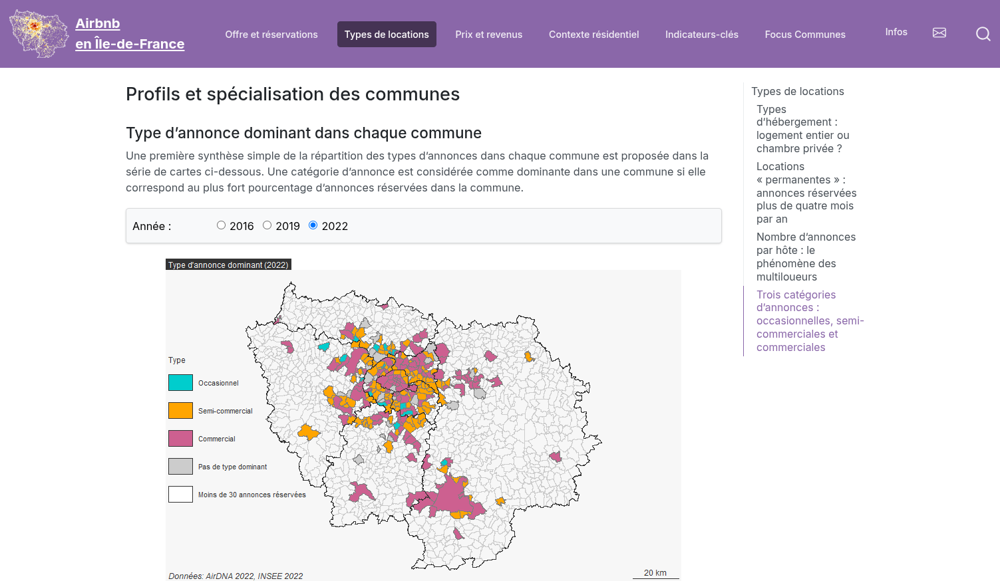
Au-delà des publications scientifiques, via sites Web dédiés par exemple
Riatelab : l’activité de développement d’outils open source
Des développements guidés par :
Mise en œuvre des bonnes pratiques de développement logiciel (versioning et notes de release, tests, documentation, etc.)
➟ Plus de 20 projets actuellement maintenus
Inscription dans la dynamique de valorisation des logiciels produits par/pour des organismes publics (code.gouv.fr, SILL, Catalogue des logiciels libres de la recherche académique, etc. – en cours 😅)
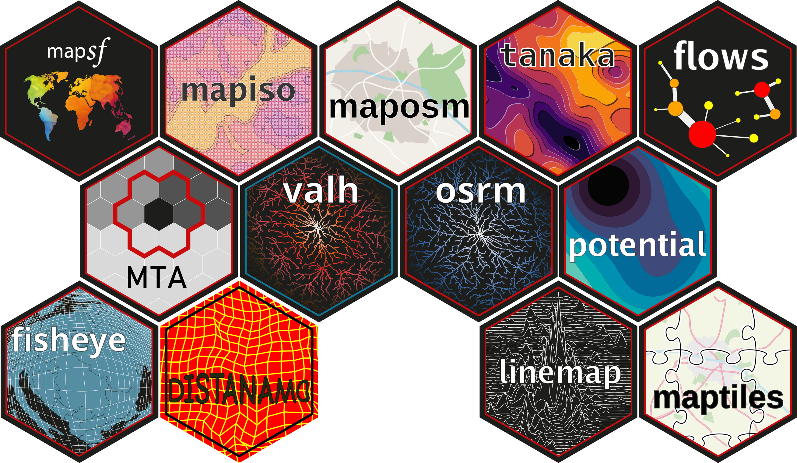
Exemple combinant plusieurs packages R développés par le RIATE
maposm : récupération de couches extraites d’OpenStreetMap
valh : calcul d’itinéraire (client pour l’API de Valhalla)
distanamo : cartogramme de distance
mapsf : cartographie
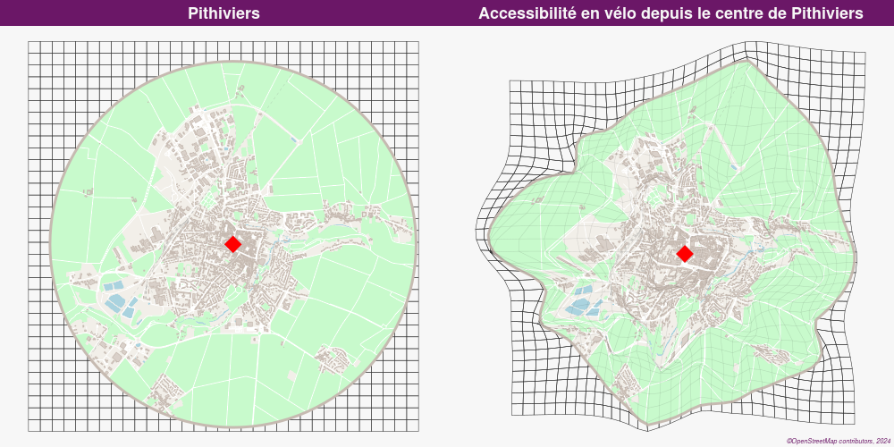
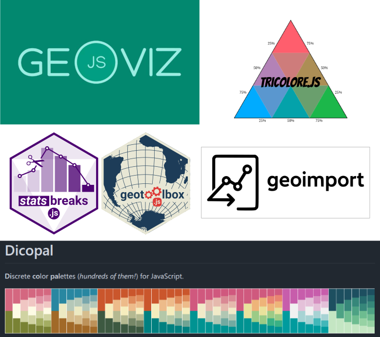
Bibliothèques publiées sur npm (+ code source sur GitHub)
De nombreux notebooks et exemples d’utilisation sur la plateforme Observable
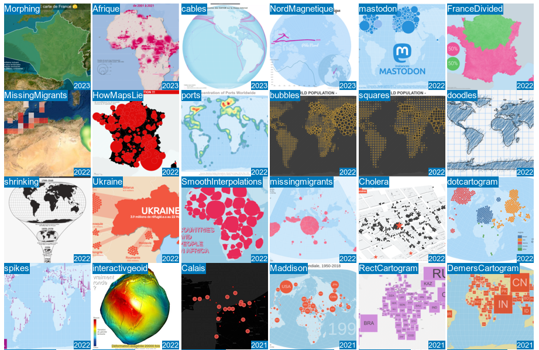
Application Web de cartographie thématique, développée depuis 2017 (le projet open source avec la plus longue durée de vie au RIATE)
Utilisée pour l’enseignement et l’apprentissage de la cartographie, principalement à l’université
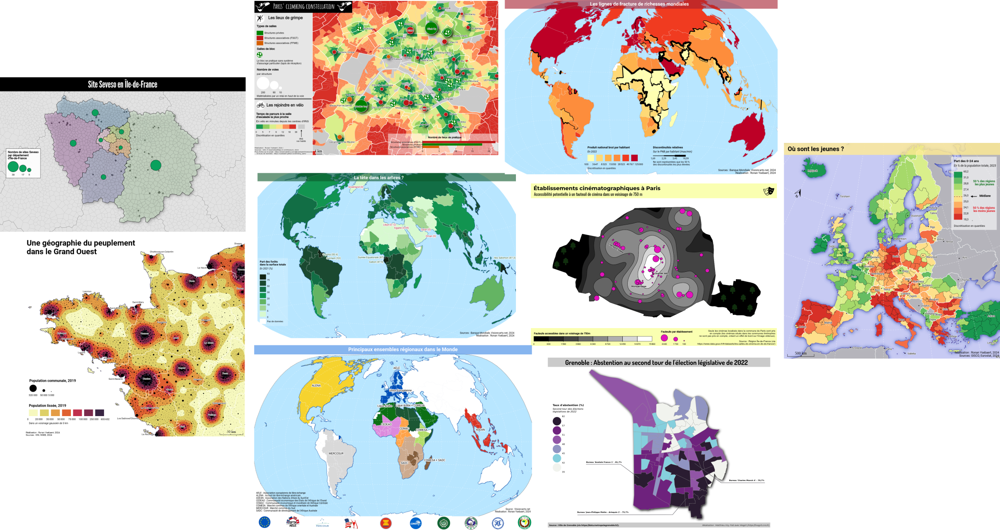
Plugin QGIS, bibliothèques Rust ou Python, etc.
Contribution à des projets open source externes
Et bien sûr, des outils en cours de développement au sein de projets de recherche 🕵️
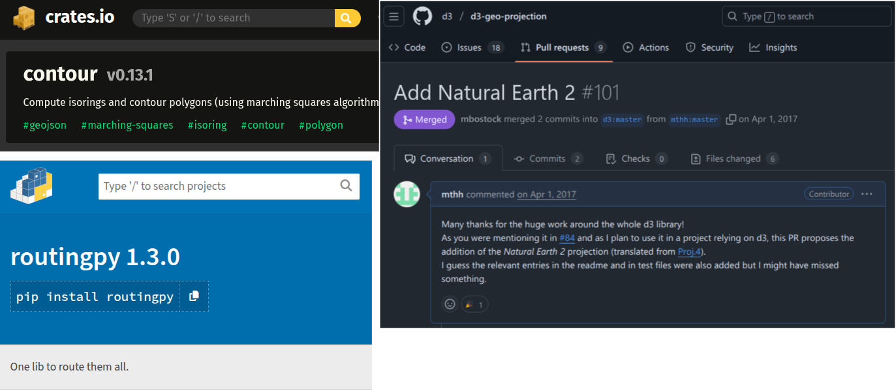
Un rôle moteur dans différentes initiatives
RZine (https://rzine.fr/)
ElementR (https://elementr.cnrs.fr/)
Séminaire RUSS (R à l’usage des sciences sociales)
Mise à disposition de supports sous licence libre (CC-BY-SA) (Géomatique et cartographie avec R, Théorie cartographie thématique + Magrit, (Géo)Visualisation en JavaScript, etc.)
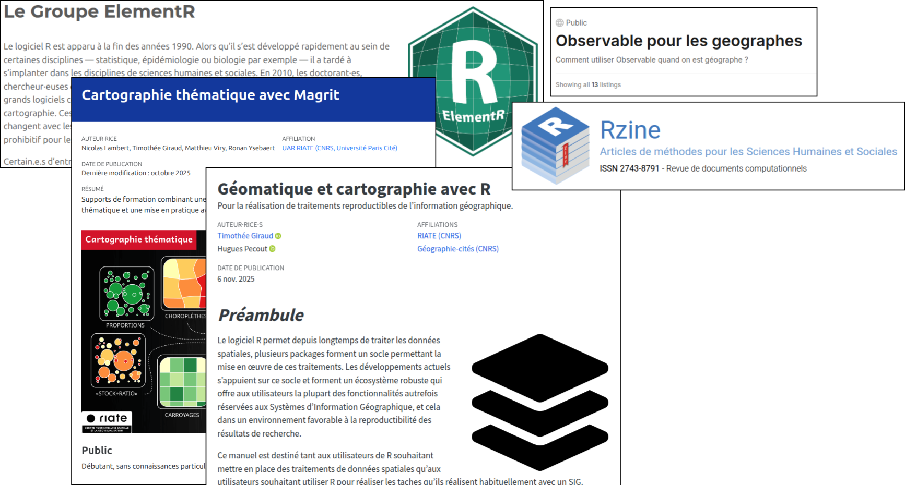
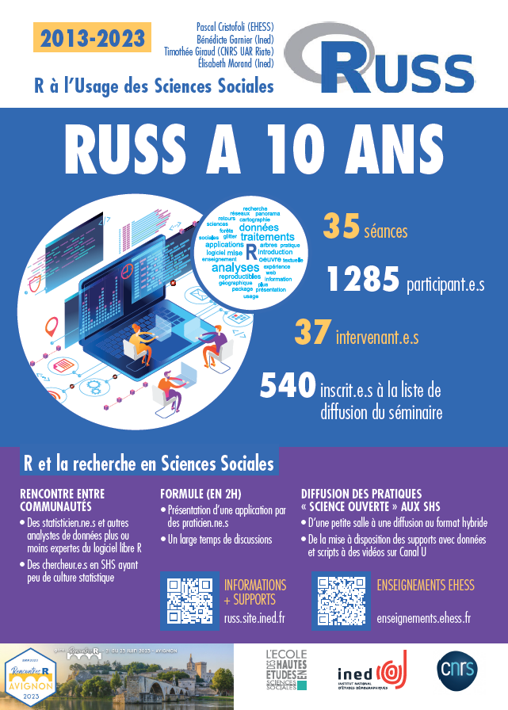
Formation à la science ouverte et aux bonnes pratiques de la recherche reproductible
École thématique SIGR (Sciences de l’information géographique reproductibles) - 2023
École thématique SO-SHS (Sciences ouvertes pour les SHS : scripts, codes et logiciels) - 2025
Une implication nationale et internationale
Bénéfices du choix de méthodes reproductibles :
Des échanges facilités entre les chercheur·es et les ingénieur·es
Des résultats faciles à diffuser et à réutiliser
Une expertise reconnue en géographie quantitative et en conduite de projets
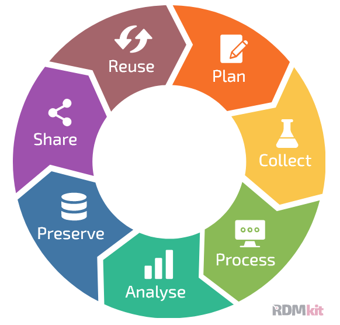
Bénéfices du choix des logiciels libres :
Une large diffusion des outils (communauté d’utilisateurs internationale), des retours d’expérience et des rapports de bugs facilités
Des usages au-delà de la communauté recherche (enseignement secondaire, collectivités territoriales, associations, hobbyistes, etc.)
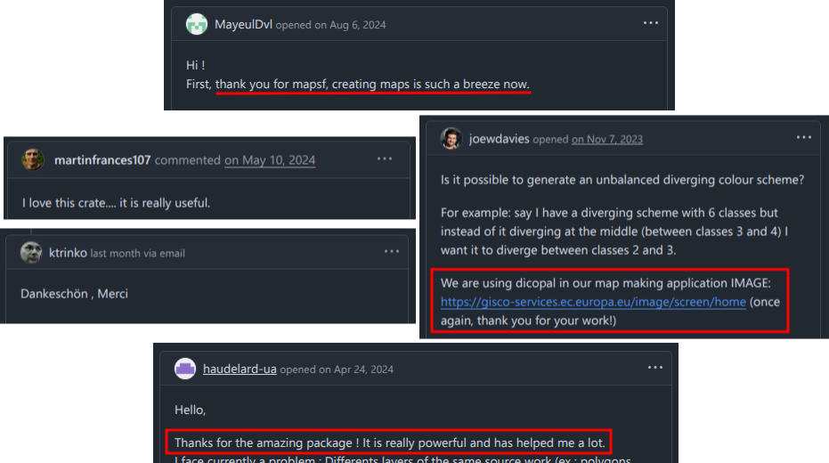
Nous retrouver 👋
UAR RIATE - https://riate.cnrs.fr / riate@cnrs.fr
Principaux dev. open source - https://github.com/riatelab
Présentation disponible sur https://riatecom.github.io/jjc-magis-2025/